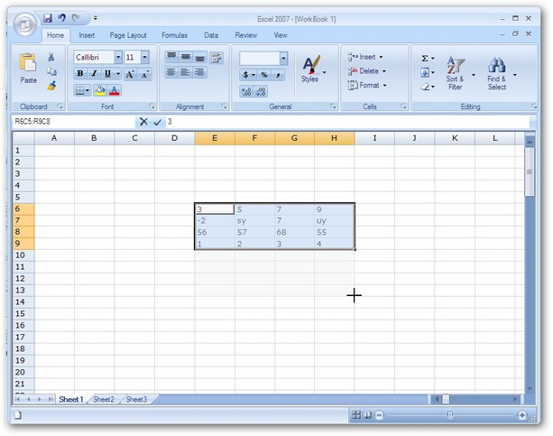
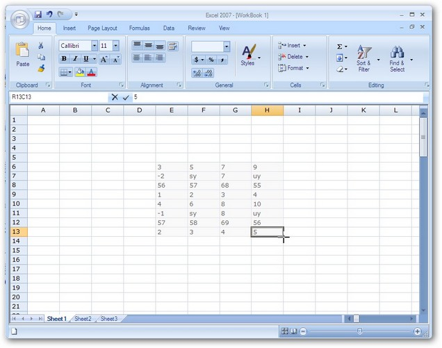
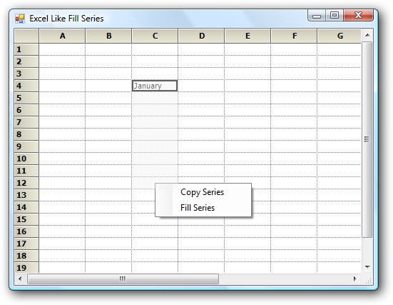
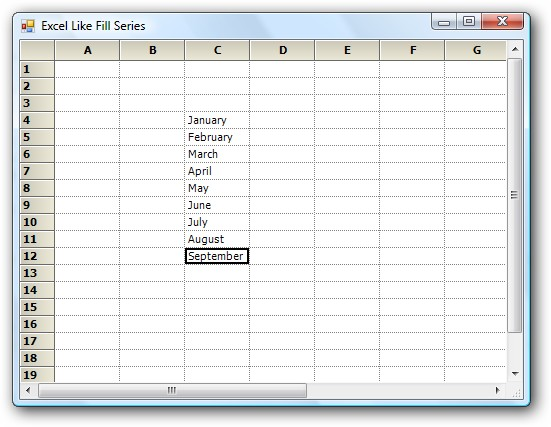

Support to implement Excel-like Fill Series in the Grid
A helper class implementing IMouseController interface has been added to GridHelperClasses library to implement Excel-like Fill Series in the Grid.
To make use of this functionality, Syncfusion.GridHelperClasses.Windows .dll must be referred and the mouse controller has to be added in MouseControllerDispatcher of grid.
The following support has been provided since 8.2
The behavior has extended support which pops up a menu after the drag that has two items:
· Copy Series - Copy paste the content from the cell.
· Fill Series - Fill the cell with appropriate sequence.
The Excel Like fill Series has support on:
· Number - From active range with single or multiple cells (e.g. 1, 2, 3...)
· Text - Will paste the same text for both 'copy series' and 'fill series'
· Date - Date format must be MM/DD/YYYY
· Month - The month in text (e.g. January, February, March... or Jan, Feb, Mar...)
The following code illustrates how to add Excel Like fill Series.
|
[C#] gridControl1.ExcelLikeCurrentCell = true; Syncfusion.GridHelperClasses.ExcelSelectionMarkerMouseController marker = new Syncfusion.GridHelperClasses.ExcelSelectionMarkerMouseController(this.gridControl1); this.gridControl1.MouseControllerDispatcher.Add(marker); |
|
[VB]
GridControl1.ExcelLikeCurrentCell = True Dim excelMarker As New ExcelMarkerMouseController(GridControl1) GridControl1.MouseControllerDispatcher.Add(excelMarker) |
Methods of IMouseController Interface Implemented
· MouseMove-The code handled in this method allows dragging the series in either one of the four directions at a time, retaining a rectangular layout.
· MouseUp-The code handled in this method sets the cell values based on the dragged series accordingly (if it is a formula or text or numeric value).
Following are screen shots illustrating the feature.
1. Image displaying drag operation of the selected series towards bottom.

Figure 478: Drag Operation of the Selected Series
2. Image displaying the filled series.

Figure 479: Filled Series
3. The image shows the popup menu displayed after dragging the cell that displays January.

Figure 480: Popup Menu Displayed after Dragging the Cell
 Note: The cell has been dragged
exactly the same as it is done in Excel.
Note: The cell has been dragged
exactly the same as it is done in Excel.
4. The image shows cells have been filled after the Fill series has been selected from the popup menu.

Figure 481: Fill Series